My Journey to Mixed Methods Research
Organizational Ethnography

•Shed light on mechanisms that explain SNA shifts over time
Qualitative & Mixed Methods
API-203M · Spring 2026
Class 1: IntroductionHKS has historically offered few qualitative methods classes (and never as part of the core before)
Among the most practically useful for understanding how policies actually work on the ground, helping reveal the how and why behind policy outcomes
Qual research can be done very well or very poorly, but few people are equipped to judge what makes for good interviews, field notes, and focus groups
Canonical Example
—A landmark randomized housing mobility experiment sponsored by HUD (N=4,604 low-income families assigned vouchers to move to higher-opportunity neighborhoods).
—The quantitative evaluation found significant long-term gains: improved physical health, mental health (with differential gender impacts among youth), and increased college attendance and earnings for children exposed young (but null or negative effects for older teens).
The numbers told you whether relocation changed outcomes, and the interviews helped explain how and why.
HUD, Moving to Opportunity Final Impacts Report (2011) · Chetty, Hendren & Katz, The Effects of Exposure to Better Neighborhoods on Children (2016)
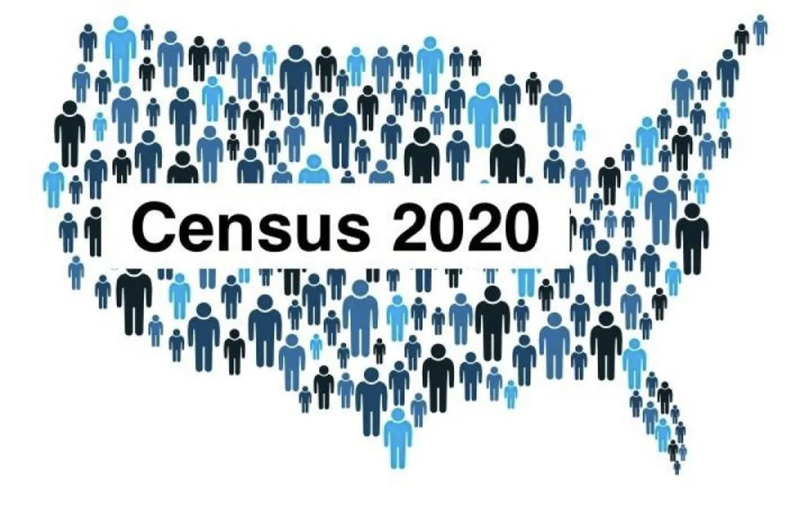
Canonical Example
—The Census Bureau knew that certain racial and ethnic groups were being undercounted, but not why.
—Ethnographic studies placed researchers in 29 communities, where they discovered the mechanisms: complex living arrangements made "household" definitions meaningless; distrust of government motivated nonresponse, etc.
The numbers described what was being missed, the ethnographies helped inform why and how to fix it.
GAO, Ethnographic Studies Can Inform Agencies' Actions (2003) · NRC, Principles and Practices for a Federal Statistical Agency · U.S. Census Bureau, Understanding Undercounted Populations (2023)
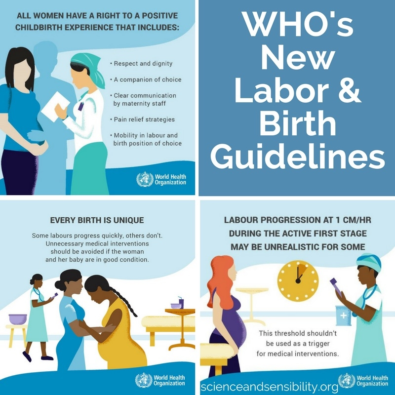
Canonical Example
—WHO childbirth guidelines historically relied on clinical trial data measuring mortality, but facility-based births were declining even as survival outcomes improved. So why did women continue to avoid birth facilities?
—Downe et al. (2018) synthesized 35 qualitative studies across 19 countries, capturing the voices of 1,800+ women. Bohren et al. (2015) documented systematic mistreatment across 65 studies in 34 countries. Women revealed they wanted not just survival, but dignity, agency, companionship, and kind care.
RCTs could measure whether interventions reduced mortality, while qualitative research helped reveal why women avoided facilities and what "working" actually meant to the people affected.
Downe et al., What Matters to Women (PLOS ONE, 2018) · WHO Intrapartum Care Guidelines (2018)
Develop critical evaluation skills to discern high-quality vs. low-quality qualitative research
Formalize qualitative reasoning skills (mechanisms, integrate qual evidence with quant causal inference...)
Familiarize you with foundational qualitative approaches & their complementary strengths & weaknesses
Experiential learning: observation (ethnographic methods), interview, focus group, archives
Understand the ethical implications of qual research, including considerations related to consent, confidentiality, and representation
Consider how qualitative insights can enhance strategy formulation and policy innovation
Explore how quant + qual can be complementary (mixed methods)
The final will serve as a bridge to your PAE (and maybe your summer internship): propose a project related to a real-world policy issue/client
State-of-the-art exposure to AI applications in qualitative research (how AI can support data collection, transcription, coding, exploratory analysis, workflows, transparency and reproducibility, pattern detection... while critically assessing its limitations, biases, and ethical risks)
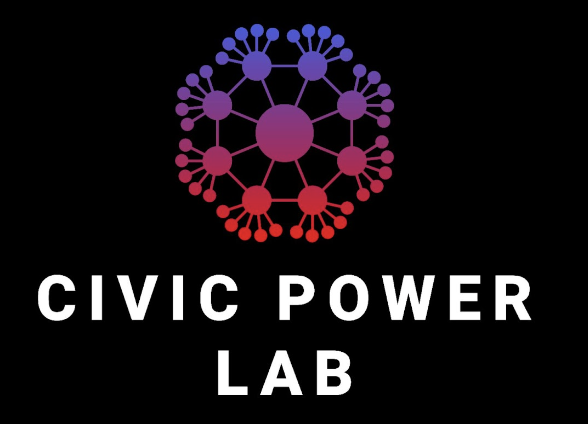
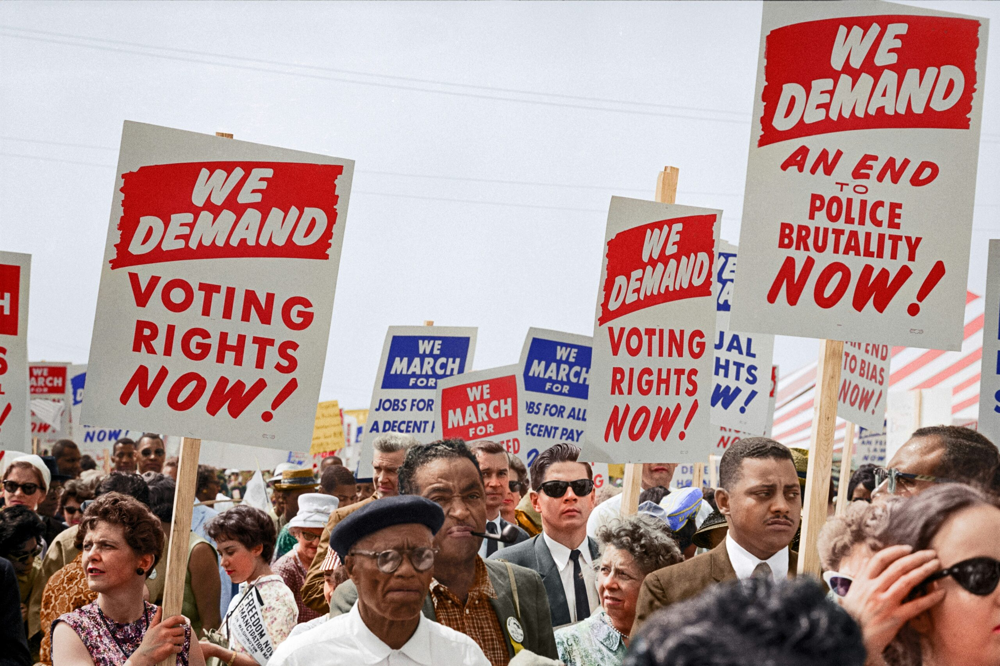
Assistant Professor of Public Policy · Harvard Kennedy School
Faculty Director, Civic Power Lab
Taubman 308 · Sign up for office hours
Sociologist and mixed methods researcher who studies how civil society can both strengthen and undermine democracy (primarily in the US and Brazil)
Two books on democratic organizing:
Current projects:
World of practice:
My Journey to Mixed Methods Research
Why do some forms of civic engagement promote democracy while others undermine it?
My Journey to Mixed Methods Research
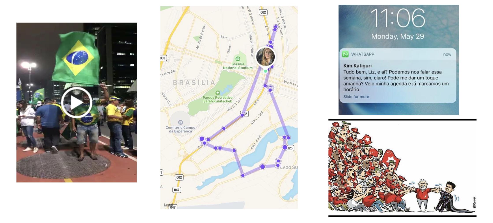
•Started in Brazil studying social movements, participatory budgeting, and the Workers' Party
•Ethnography & interviews
My Journey to Mixed Methods Research
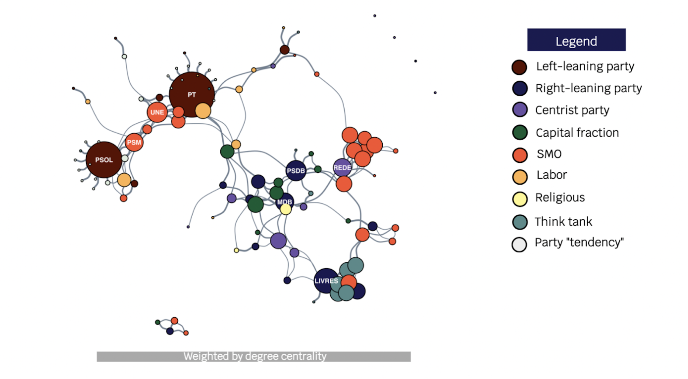
•Combined ethnographic fieldwork with network analysis and large-N organizational data to understand how civic engagement influences (and is influenced by) political change
•Observe and quantify political shifts using social network analysis
My Journey to Mixed Methods Research
•Shed light on mechanisms that explain SNA shifts over time
TF, PhD Candidate
Grading, model assignments
CA
Canvas
CA
Absence tracking
CA
Teachly & participation
CA
Teachly & participation
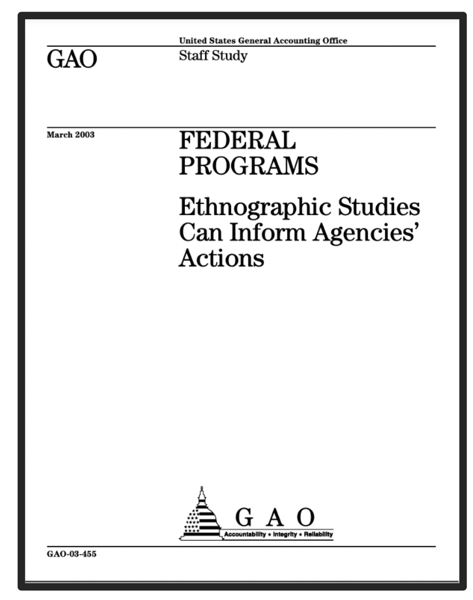
GAO-03-455 (2003)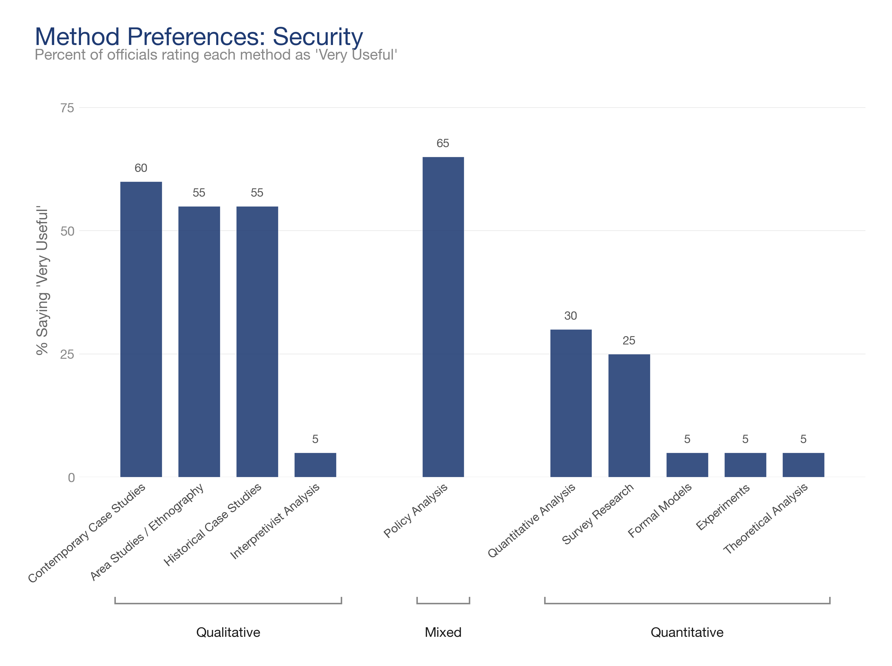
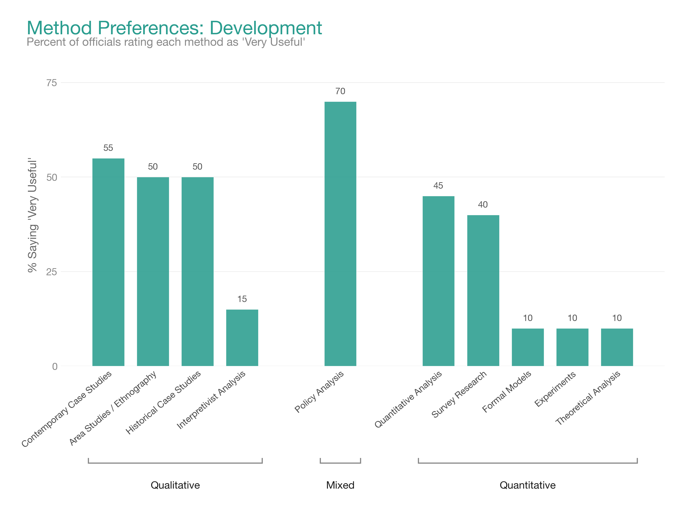
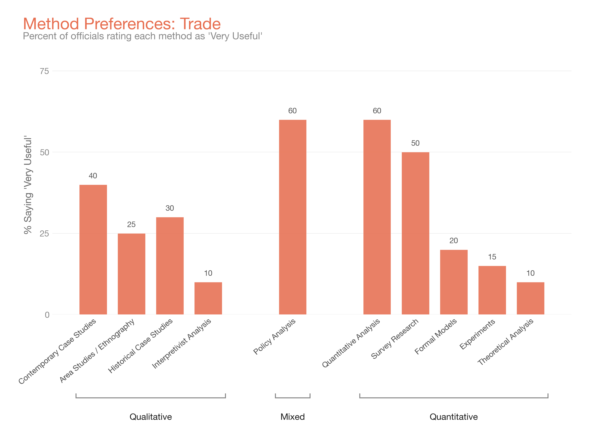
Overview,
outstanding qual
research
Introduction +
workshop observation
Background, ethics,
simulation
Ethnography,
fieldwork
Workshop
interview assignment
Coding workshop,
Anthropic guest lecture
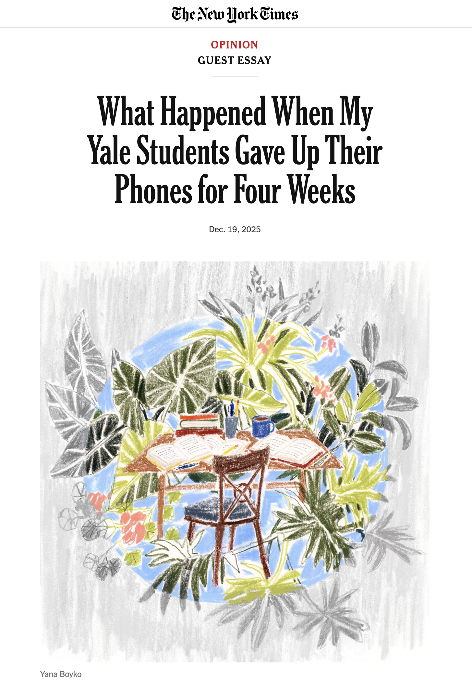
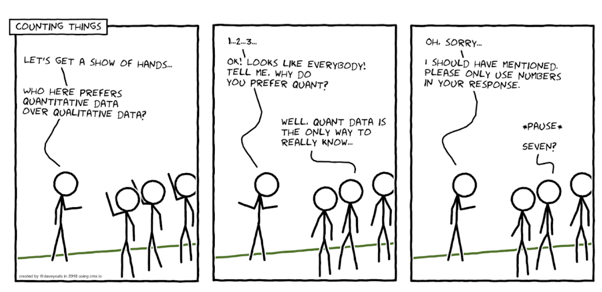
Research that relies on measuring variables using a numerical system, analyzing using statistical models, and reporting relationships among variables.
Approaches used to explore and interpret human behavior through non-numerical data. Emphasizes depth, context, and subjective meaning rather than statistical generalization.
"Not everything that can be counted counts, and not everything that counts can be counted."— William Bruce Cameron (1963)
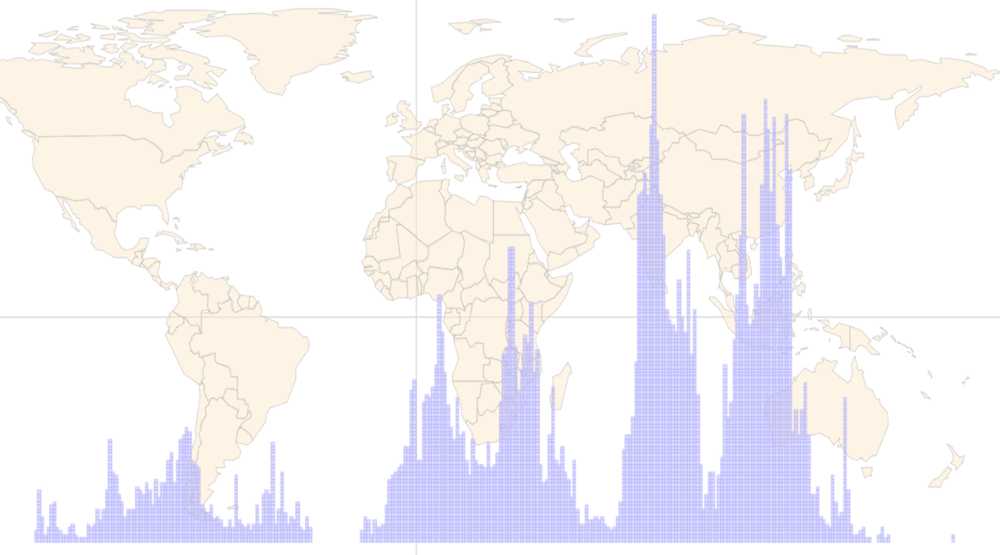
"It's very silly to do an impact evaluation using some randomized controlled trial, and not also do a deep ethnography to understand why you got the results you got."— Vijayendra Rao, World Bank
Combine two or more kinds of data
Example: Geoinformatics + Fieldwork and Interviews
Two or more analytical strategies on the same data
Example: Quantitative text analysis + Archival/content analysis
Due Monday, March 9 on Canvas by 11:59PM
Substantive policy question you might explore in this course using qual methods
05:00
Click timer to start
Questions?
Prof. Liz McKenna · emckenna@hks.harvard.edu
Office hours: Tuesdays, 1:30-3:00, T-308
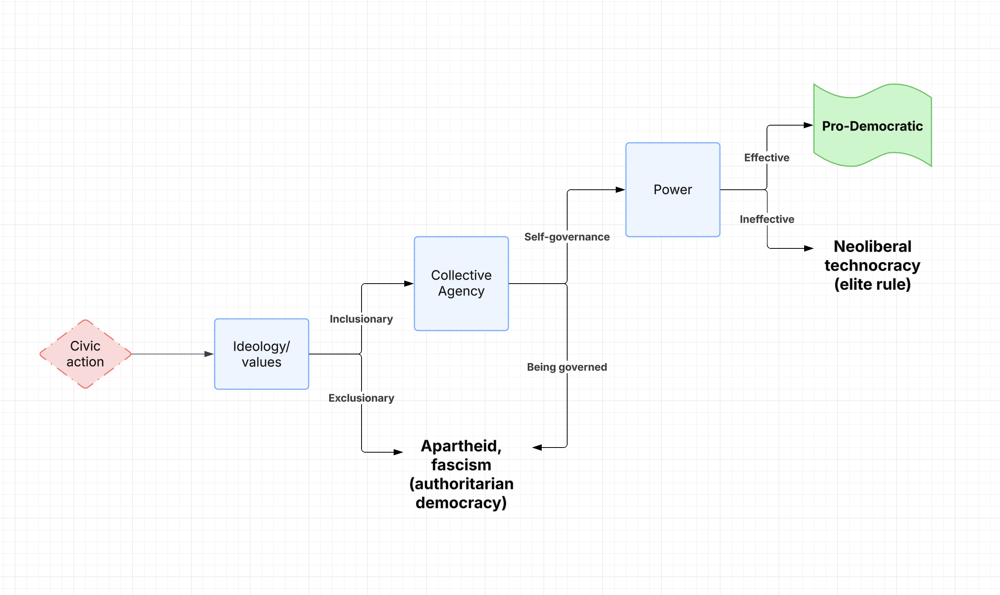
(McKenna 2026)